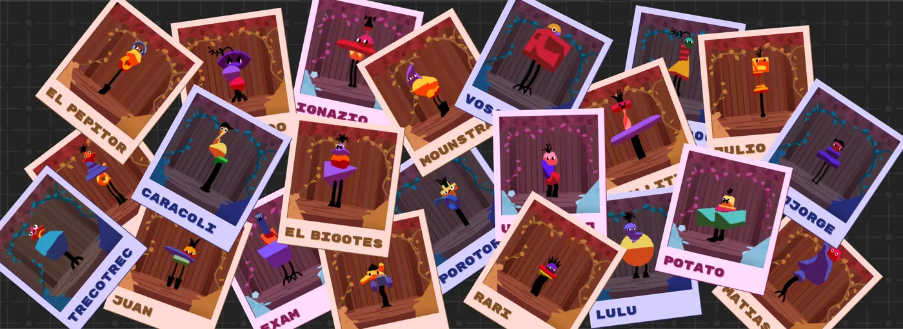
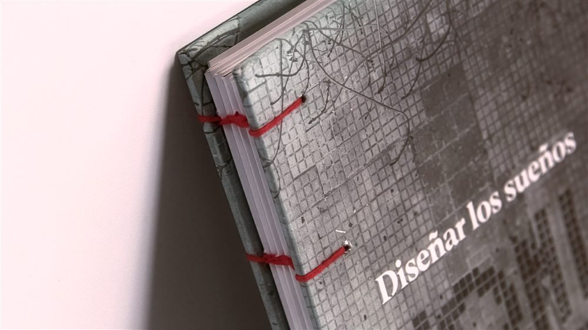
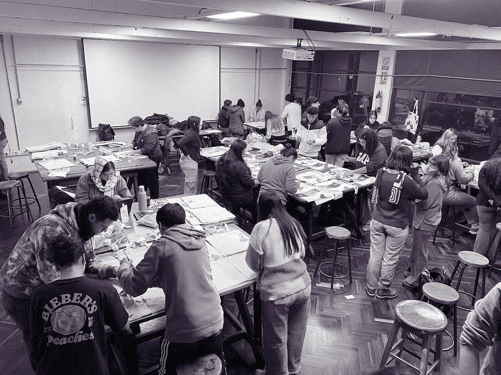
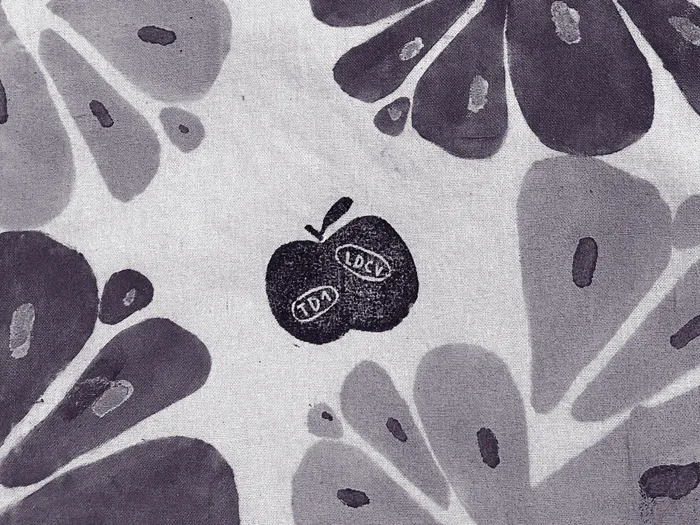
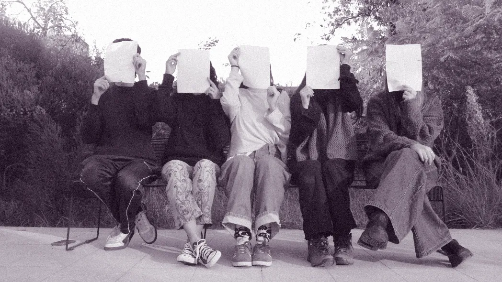

Magdalena Soulier
I'M A VISUAL DESIGNER SPECIALIZED IN BRANDING

TU BARRIO, TU FERIA
Estrategia multicanal desarrollada con el objetivo de reconectar a las juventudes de Montevideo con las ferias barriales.
A través de una identidad visual dinámica y una plataforma web geolocalizada, el proyecto traduce la lógica del mercado territorial a lenguajes digitales, facilitando el acceso a información en tiempo real y adaptándose a los hábitos de consumo contemporáneos.

FABRIKA DE GIGANTES
Diseñado para Revista Gigantes (LaDiaria) con el objetivo de transformar el consumo pasivo de contenido en una experiencia participativa de User-Generated Content (UGC).
El proyecto funciona como puente para derivar tráfico calificado hacia la plataforma digital de la revista, incrementando los niveles de engagement y retención en el público infantil.

DISEÑAR LOS SUEÑOS CON LOS PIES EN EL BARRIO
Diseño editorial realizado para la tesis de Valentina Ibarlucea.
El texto investiga los alcances del arte y diseño participativo en colectivos de base territorial, tomando como caso de estudio la Comisión Derecho a la Ciudad en Ciudad Vieja, Montevideo.
FORMACIÓN
En la búsqueda académica de encontrar mi vocación, descubrí que mi valor está en la intersección de las disciplinas que fui cruzando en el camino. Sin saberlo en su momento, fui forjando un perfil híbrido y estratégico.
Posgrado en Diseño de Experiencia de Usuario
Especialización en UX Writing, UX Research, arquitectura de la información y liderazgo estratégico. Aplico estas herramientas para mitigar la incertidumbre, validar hipótesis con usuarios y optimizar flujos de interacción reduciendo la fricción cognitiva.
Licenciatura en Diseño de Comunicación Visual
Mi formación de grado me capacitó para transformar conceptos abstractos en sistemas visuales sólidos, que no sólo tienen en cuenta el contexto, sino que lo utilizan a su favor.
Jóvenes a programar
A través de este programa incorporé fundamentos de lógica y desarrollo frontend. Esto me permite colaborar de forma directa con equipos de ingeniería, optimizar la transición del diseño a producción y empujar los límites visuales sin romper el rendimiento técnico.


DOCENCIA
Soy docente en el Taller de Diseño 1 de la Universidad de la República. Trabajar con estudiantes de primer año implica saber deconstruir procesos complejos y explicarlos de forma simple, guiandolos para que aprendan a tomar decisiones proyectuales fundamentadas.
Estar en el aula me exige mantener un ejercicio constante de resolución de problemas, un diálogo abierto y una actualización metodológica continua que traslado de forma directa a mi práctica profesional.
MEDIA RESMA
Integro una cooperativa de diseño llamada media resma. A través de la autogestión y la toma de decisiones colectivas, buscamos generar un impacto positivo en la comunidad, trabajando codo a codo con colectivos sociales, organizaciones y asociaciones.
Esta experiencia me da una gran capacidad de adaptación para diseñar en equipo y de forma eficiente bajo restricciones de presupuesto y tiempo.
